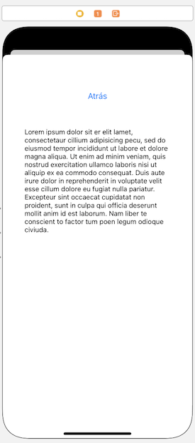

Ejercicio de view controllers (2,5 puntos)¶
Vamos a hacer una aplicación que vamos a llamar “Pioneras”, y que nos dará datos de algunas mujeres pioneras de la informática. La aplicación tendrá una pantalla principal en la que aparecerán sus imágenes, y haciendo tap sobre cada una podremos ir a las pantallas secundarias donde se nos dará más información.
Realizar la estructura básica de la aplicación (0,75 puntos)¶
- En este archivo tenemos las imágenes y los textos sobre las tres pioneras: Ada Lovelace, Grace Hopper y Barbara Liskov
- Arrastra las imágenes al
Assets.xcassets(puedes arrastrar la carpeta "imágenes" o los archivos de dentro). Se crearán 3 "Image sets" con los nombres de los archivos originales (sin la extensión). - Puedes hacer lo mismo con los textos, por cada uno se creará un "Dataset" con el nombre del archivo original, sin la extensión. Fíjate en que estos assets acaban su nombre por
_biopara que no colisionen sus nombres con los de las imágenes.
- Arrastra las imágenes al
- Crea tres botones en la pantalla principal, y para cada uno de ellos en lugar de texto vamos a usar como imagen de fondo la de cada mujer
- Si seleccionas el botón, en el panel derecho, en las propiedades, tienes una sección "Background configuration". Cambia la primera propiedad, "Background" por "Custom", y en el "image" de esta sección pon la que proceda.
- Al final, cada botón debería ocupar todo el ancho de la pantalla y un tercio del alto. Pon las restricciones de autolayout que sean necesarias para conseguir esto
Crear la pantalla secundaria y la navegación hasta ella (0,75 puntos)¶
- Crea una pantalla secundaria (un view controller) con un botón "volver atrás" y un campo de texto de varias líneas (un text view).
- Añádele las restricciones de autolayout necesarias para que:
- El campo de texto quede centrado en horizontal y vertical, y a una distancia horizontal de 40 de uno de los bordes de la pantalla.
- El botón debe aparecer centrado en horizontal, y a una distancia de 20 puntos de la parte superior de la "safe area" y de 40 de la parte superior del campo de texto.

- Con
Ctrl+arrastrarpodemos crear un segue desde cada uno de los botones hasta la pantalla. Habrán tres segues que lleguen a la misma, no debería ser problema. -
Implementa la opción de volver atrás de la secundaria a la principal:
-
En el controller de la primera pantalla crea un método para que funcione el unwinding (no hace falta que haga nada, solo que exista)
@IBAction func retornoDeSecundaria(segue: UIStoryboardSegue) { } -
Con
Ctrl+Arrastrarconecta el botón “atrás” con el icono de “Exit” de la parte superior del controller. Ejecuta el proyecto y comprueba que puedes ir a la secundaria desde la princpal y luego volver atrás. Evidentemente el texto con la biografía todavía no cambiará.
-
Crear un controlador personalizado para la pantalla secundaria (1 punto)¶
Si seleccionas el view controller de la pantalla secundaria y miras el identity inspector en el panel de la derecha de Xcode, verás que el controlador de la pantalla secundaria es un tipo propio de iOS, el UIViewController. Vamos a cambiarlo por uno implementado por nosotros:
- Crea una nueva clase de Cocoa Touch, (File> New > File…, plantilla “cocoa touch class”). En la segunda pantalla del asistente dale a la clase el nombre
SecundarioViewControllery haz que sea una subclase deUIViewController. Deja sin marcar la opción de crear el .XIB - En el storyboard, selecciona el controller de la pantalla secundaria (es mejor que lo hagas pulsando en el primero de los iconos que aparecen en la parte superior)

- Una vez seleccionado, ve al identity inspector en panel derecho de Xcode y en el apartado de
Custom classselecciona como clase la que has creado,SecundarioViewController
Añadirle un outlet al controlador secundario¶
Tienes que añadir un outlet al campo de texto para que su contenido se pueda cambiar desde el controlador secundario. Hazlo como habitualmente, con ctrl+arrastrar entre el campo y el SecundarioViewController, en el modo assistant del editor.
Hacer que el texto cambie según el botón pulsado¶
-
Para que le podamos decir al controlador secundario qué asset tiene que usar, debes crear una propiedad en el
SecundarioViewControllerllamadanombreAssetde tipoString -
Para establecer una asociación sencilla entre cada segue y los datos a mostrar puedes usar el identificador del segue. Haz clic sobre él y en el
Attributes inspectorcambia suidentifier, respectivamente porlovelace,hopperyliskov -
ahora en la clase
ViewController, que es el controlador de la pantalla principal, puedes implementar elprepare(for:,sender:). Mira los apuntes para los detalles. En él debes:- Obtener el controlador secundario, a partir del segue (tendrás que hacer un cast con
as!para convertirlo al tipo adecuado) - establecer el valor de la propiedad
nombreAssetdel controlador secundario al identificador del segue concatenado con_bio. ya que así se llaman los assets de texto.
- Obtener el controlador secundario, a partir del segue (tendrás que hacer un cast con
-
Finalmente, en el
viewDidLoad()delSecundarioViewControllerpuedes acceder a la propiedadself.nomAsset, cargar el asset y mostrarlo en el campo de texto. Puedes cargar los datos del asset como sigue:
//CAMBIA nombre_del_asset por el que proceda
var texto = ""
let asset = NSDataAsset(name: nombreAsset)
if let data = asset?.data {
texto = String(data: data, encoding: .utf8) ?? ""
self.campoTexto.text = texto
//AQUI TE FALTA COLOCAR EL TEXTO EN EL TEXT VIEW
//...
}